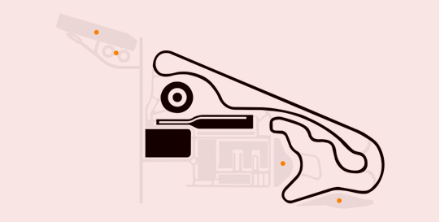

BMW 드라이빙 센터는 전문적인 드라이빙을 즐길 수 있는 9가지 를
운영하고 있습니다.
운전자는 국제자동차연맹(FIA) 규격에 적합한 트랙에서 안전하게 BMW,
MINI 차량의 퍼포먼스를 경험해 볼 수 있습니다.

폭 11m 총면적 1,440m 크기의 트랙으로 차량의 가속력 및 엔진 파워를 느껴 볼 수 있습니다.
1. 가속 및 제동 직선 주행로에서 최대 200km까지 가속할 수 있는 이며, 굴곡로에서는 차량의 현가장치 엔진 파워를 느껴볼 수 있습니다.
2. 핸들링 차량의 기본 조작 방법을 익히고 스티어링 적용, 제동과 엔진 파워 체험 등을 통해 드라이빙 적응도를 높이는 입니다.
222폭 11m 총면적 1,440m 크기의 트랙으로 차량의 가속력 및 엔진 파워를 느껴 볼 수 있습니다.
1. 가속 및 제동 직선 주행로에서 최대 200km까지 가속할 수 있는 이며, 굴곡로에서는 차량의 현가장치 엔진 파워를 느껴볼 수 있습니다.
2. 핸들링 차량의 기본 조작 방법을 익히고 스티어링 적용, 제동과 엔진 파워 체험 등을 통해 드라이빙 적응도를 높이는 입니다.
333폭 11m 총면적 1,440m 크기의 트랙으로 차량의 가속력 및 엔진 파워를 느껴 볼 수 있습니다.
1. 가속 및 제동 직선 주행로에서 최대 200km까지 가속할 수 있는 이며, 굴곡로에서는 차량의 현가장치 엔진 파워를 느껴볼 수 있습니다.
2. 핸들링 차량의 기본 조작 방법을 익히고 스티어링 적용, 제동과 엔진 파워 체험 등을 통해 드라이빙 적응도를 높이는 입니다.
444폭 11m 총면적 1,440m 크기의 트랙으로 차량의 가속력 및 엔진 파워를 느껴 볼 수 있습니다.
1. 가속 및 제동 직선 주행로에서 최대 200km까지 가속할 수 있는 이며, 굴곡로에서는 차량의 현가장치 엔진 파워를 느껴볼 수 있습니다.
2. 핸들링 차량의 기본 조작 방법을 익히고 스티어링 적용, 제동과 엔진 파워 체험 등을 통해 드라이빙 적응도를 높이는 입니다.